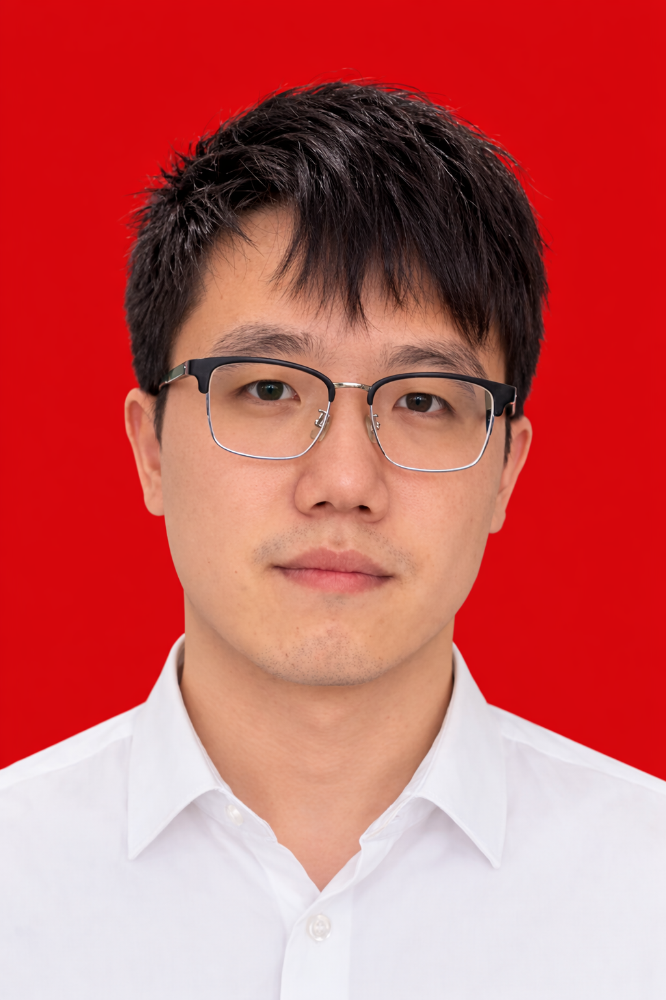

Liang Xiaoyuan 梁效源
软件开发工程师，有电信核心网与 AI 应用的落地经验。熟悉
C/C++、Python，做过运营商级补丁框架设计、DPDK
底层问题排查，以及深度学习模型的工程部署。
About Me
Work Experience
| 2024–2025 |
华为，云核心网 ICT · 媒体组 / 控制组
|
软件开发工程师 |
-
负责 CloudSE2980 产品 SCU、CMU
模块的补丁框架设计与构建，覆盖 24.4 → 25.8
全版本周期，对接运营商客户定制补丁需求并推动落地交付。
-
排查 HRU 亚健康恢复系统上线后 CPU 持续 100% 告警问题，定位根因为 HRU
绑定双 DPDK 核心与恢复轮询逻辑冲突。
-
主要使用
C/C++、Python，参与媒体组与控制组跨组协作，跟踪版本迭代与现场问题闭环。
| 2022–2023 |
海格通信，人脸识别项目
|
软件开发工程师 |
-
基于牛津大学 VGGFace 论文（Deep Face Recognition，原文精度 99.7%）使用
Keras 复现模型，在私有数据集上达到 93% 识别准确率。
-
将模型部署至大批量摄像头硬件，完成从训练到嵌入式端工程化落地的完整链路。
| 2023–2024 |
富士康，iPhone 15 摄像模组
|
制程工程师 |
-
负责产线流程优化与多工位配套系统支持，对异常数据进行记录、分析与跟踪，推动问题闭环处理。
Education
主修课程包括理论力学、材料力学、流体力学、计算方法和工程软件基础。
Areas of Interest
操作系统、人工智能、有限元仿真、分布式系统、工程自动化，以及计算方法在真实问题中的应用。